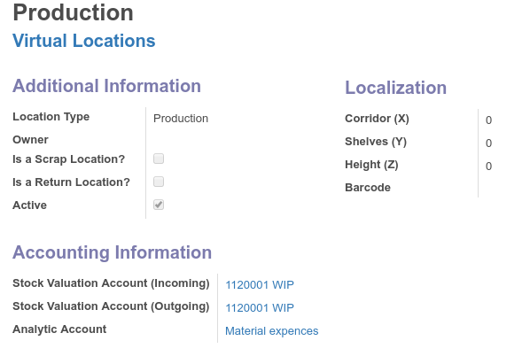

<div class="container">

  <div class="row text-left" style="margin-top: 2em;">
    <div class="col-sm-5">
      <p><h2>Enhance your analytic accounting with stock moves</h2><br/>
      Now you can track expences on virtual locations when doing scrap, inventory loss or manufacturing.<br/>
      When incoming stock valuation account is debited corresponding analytic entry will be created and linked to journal move.
    </p>

    </div>
    <div class="col-sm-7">
      
    </div>
  </div>

</div>
